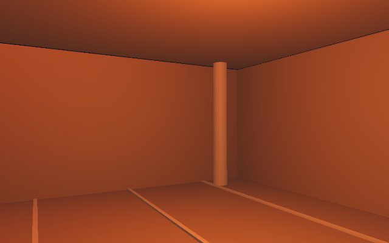
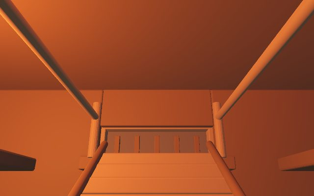

world-agent · case 002 · ← 陋居
《消失的13级台阶》里的山间破败寺庙，寺内供奉高大的不动明王木像。
两个 Dream Agent 垂直切片运行时，Godot 4.7.1 Web 导出，单线程 gl_compatibility。
同一座寺庙的两次空间方案，区别在于怎么从室外到达上层。

缓坡壁架 → 绳索 → 窗口进入 → 一层大厅观景点。没有楼梯。

木梯直接通向二层，梯上端设落脚平台，二层楼板围绕梯口拆块以免阻挡。